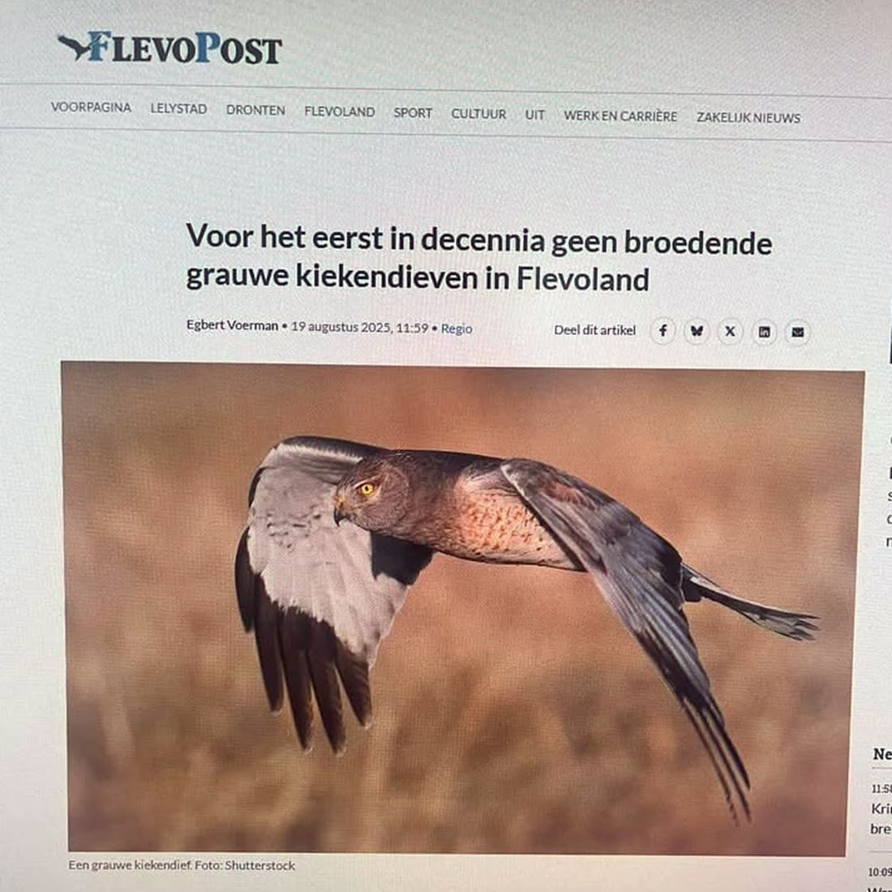
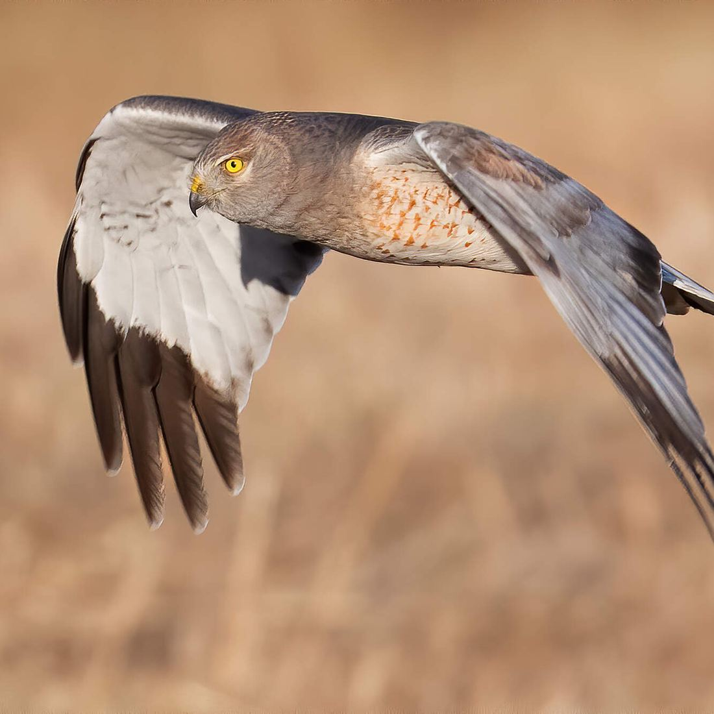

Amerikaanse blauwe kiekendief, geen grauwe kiekendief
- Op de foto
- Amerikaanse blauwe kiekendief
- Het ging over
- Grauwe kiekendief
Aangepast. FlevoPost heeft de foto vervangen. Bij het artikel staat nu een grauwe kiekendief: een vrouwtje met een jong, via Waarneming.nl. De redactie liet dat zelf onder deze post weten.


Dit is geen grauwe kiekendief. Dit is een mannetje Amerikaanse blauwe kiekendief, een roofvogel uit Noord-Amerika.
De Flevopost bracht vorig jaar het bericht dat er voor het eerst in decennia geen grauwe kiekendief meer broedde in Flevoland. Eronder een stockfoto, met als onderschrift "Een grauwe kiekendief".
Tel de vingers eens op de tweede foto. Het zijn er vijf. Een grauwe kiekendief heeft er vier.
In de metadata van diezelfde foto staat trouwens gewoon "gray ghost", zoals Amerikaanse vogelaars deze soort noemen.
Volgende keer even de vingers tellen, Flevopost!
Bron: Vogelbescherming Nederland